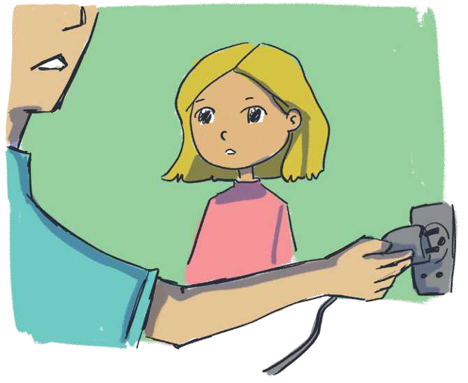

TEMATIKA 4: NJOHJA E RREZIQEVE3. Babai i Ditës është zjarrfikës
Mendo dhe përgjigju
Ndihmë: si të punoj?
Shkruaj përgjigjen tënde. Mund ta thuash edhe me zë ose t’ia tregosh dikujt që shkruan për ty. Kur të mbarosh, shtyp butonin “Dërgo”.
Lexo përsëri tregimin
Dita donte të hekuroste uniformën e shkollës dhe mori hekurin e rrobave. Ndërsa po përpiqej ta fuste spinën në prizë, babai e pa dhe e ndaloi. Ai e porositi që nuk duhej ta bënte kurrë atë veprim pa ndihmën e një më të rrituri. Ai e porositi që të mos fuste asnjëherë vetë një pajisje elektrike në prizë. Të paktën derisa të rritej edhe pak
